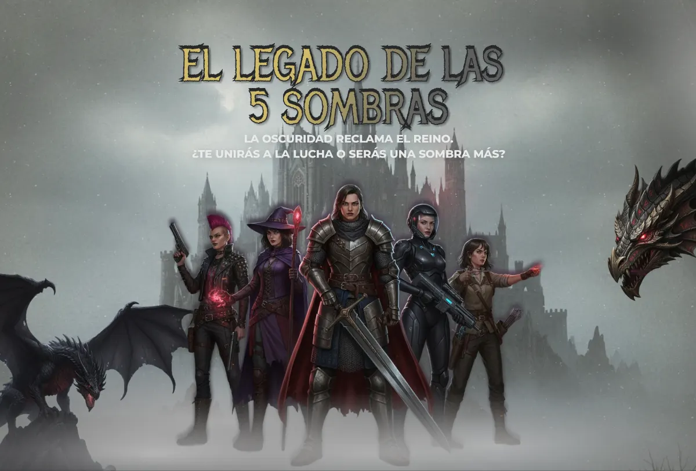
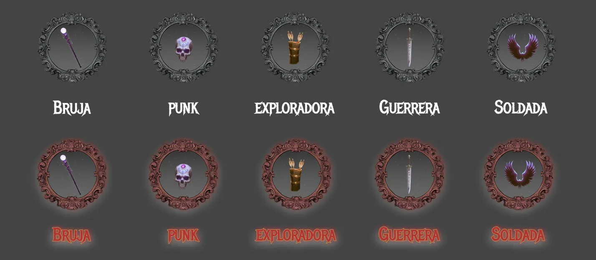
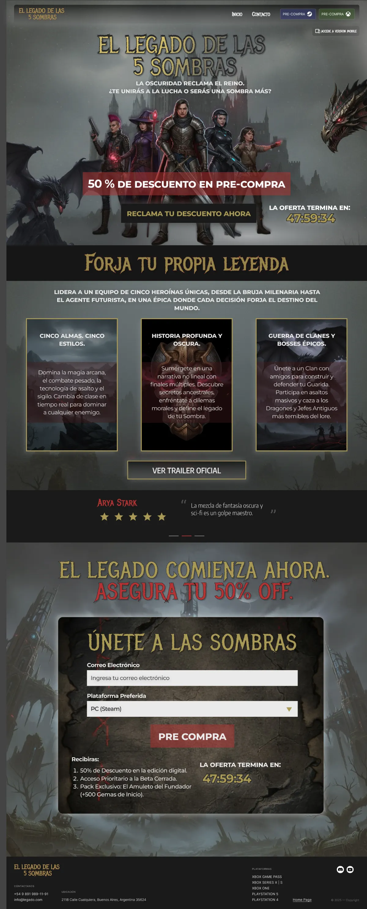
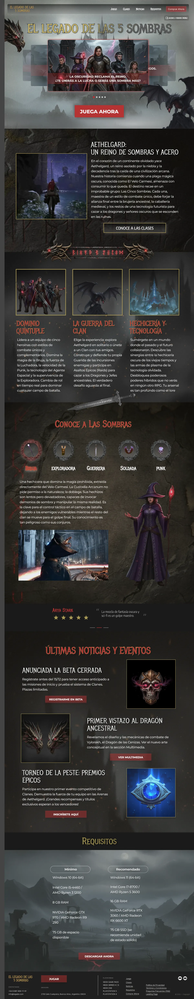
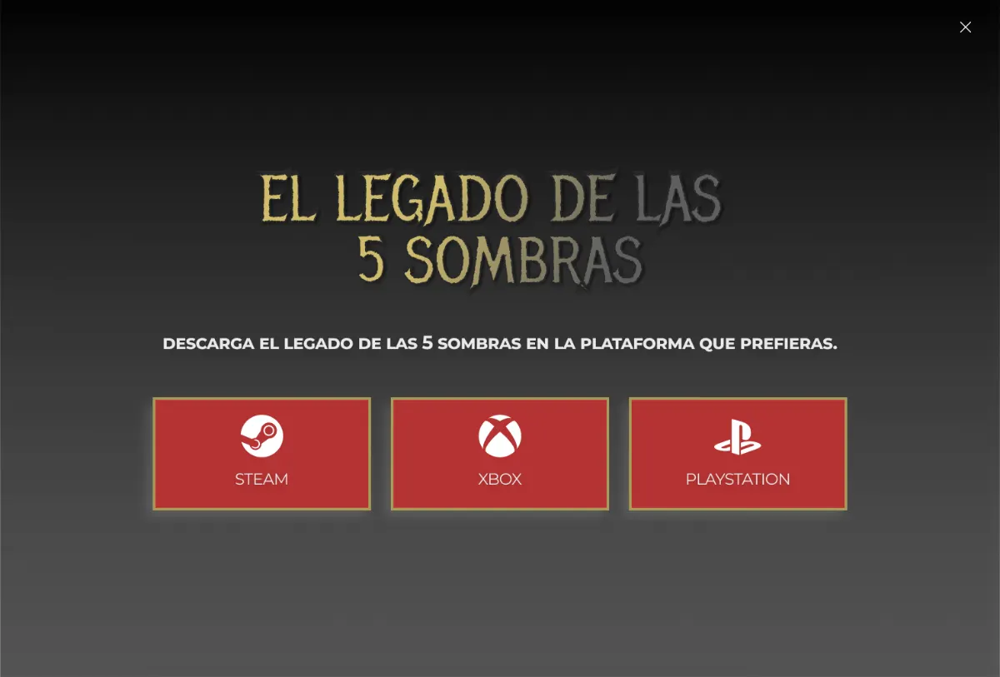
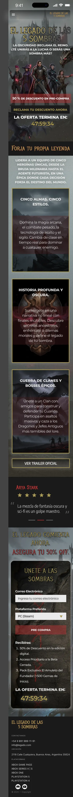


Define a digital launch strategy for a thematically dense RPG while keeping the first user journey clear, persuasive and easy to enter.
Case study / Game UI + launch strategy
Making a game world feel immersive without making it hard to enter.
In this self-directed concept, I explored how a dark fantasy RPG could introduce its world, explain its offer and lead players toward action without letting atmosphere get in the way of usability.
Game UI
Landing Page
Conversion
Mobile UX
Visual Direction

Product Designer across UX/UI direction, information architecture, conversion strategy, mobile UX and visual system decisions.
A responsive dual-architecture concept: landing page for pre-order conversion and home page for immersive product exploration.
Story
Atmosphere had to support the journey, not compete with it.
The product needed to feel atmospheric without becoming hard to use. I approached the work as a balance between immersion and action: users should understand the world, the offer and the next step without fighting the interface.
The result separates two jobs: a landing page designed for urgency and conversion, and a home page designed for discovery, lore and product information.
01 / Visual Direction
Turn the genre into interface rules.
The moodboard translated the RPG world into concrete interface decisions: high contrast, metallic textures, bronze accents, red action moments and dark atmospheric surfaces.
- Built a visual direction that supports fantasy and sci-fi cues.
- Defined color roles for value, urgency, structure and action.
- Kept UI components readable inside a high-atmosphere brand world.
El Legado de las
5 Sombras Metal Mania · display, gold gradient #D0BC6C → #606060
5 Sombras Metal Mania · display, gold gradient #D0BC6C → #606060
Lidera a un equipo de cinco heroínas únicas. Montserrat carries every functional moment: offers, forms, requirements and navigation.
Montserrat · 400 / 600 / 700 · UI and body
Acento
#B53333Action · urgency · CTA
Acento secundario#AA9955Value · borders · countdown
Principal#1A1A1ASurfaces · depth
Secundario#4F4F4FStructure · dividers
Texto-Luz#EAEAEAReadable text on dark
Conversion components
50 % de descuento en pre-compra
La oferta termina en:47:59:34
Steam
Xbox
PlayStation

02 / Architecture
Separate conversion from deeper world-building.
Trying to make one page sell the game and explain its whole world would weaken both jobs. I separated a focused conversion journey from a broader home experience for lore, discovery and product detail.
- Placed the primary offer and CTA above the fold.
- Used urgency and incentive stacking without hiding key details.
- Reduced the form to the minimum information needed to convert.

Landing · convert
One offer, one countdown, one form. Everything above the fold points to the pre-order.

Home · explore
Lore, classes, news and requirements for players who want to know the world before buying.

Live prototype
Scroll it, open the menu, jump between Home and Landing.
The Figma prototype keeps the animations and the cross-links between both experiences.
Open full screen03 / Mobile UX
Keep the atmosphere. Remove the friction.
The mobile experience prioritizes thumb-zone access, clear content chunks, legible type and action components that feel native to the game world while still behaving like reliable product UI.
- Used 56px interaction targets for key mobile actions.
- Maintained readable typography in a high-contrast dark interface.
- Created semantic button patterns for primary conversion moments.


04 / Prototype Direction
Two experiences for two different player intentions.
The case demonstrates how visual storytelling, product architecture and conversion mechanics can work together. The interface keeps the fantasy atmosphere, but every section still has a clear product role.